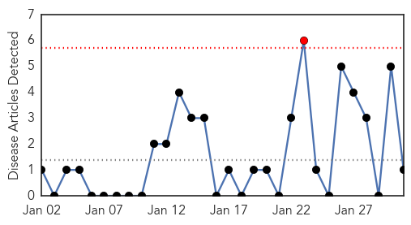
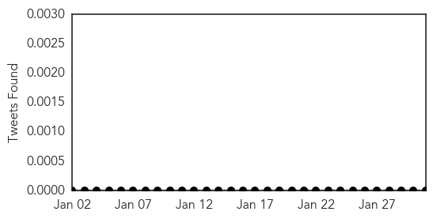
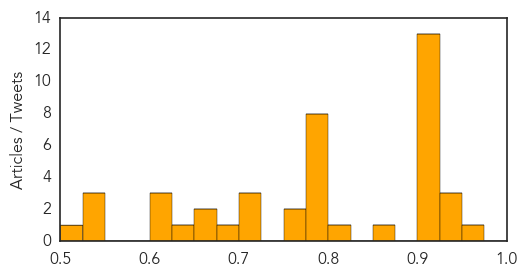

Hepatitis
30-Day Web Trend
1 alerts, 0 warnings

30-Day Twitter Trend
0 alerts, 0 warnings

Article Locations
Article Confidences

Top Articles:
Top Tweets:
-
No tweets found for Jan 31, 2015
Unknown
30-Day Web Trend
0 alerts, 0 warnings

30-Day Twitter Trend
3 alerts, 0 warnings

Article Locations

Article Confidences
Top Articles:
- 0.952
- Second case of H7N9 bird flu confirmed in British Columbia
- 0.937
- Second bird flu case confirmed in Canada – BorneoPost Online
- 0.935
- Sudan Vision Daily
- 0.934
- Plague cases rise in Madagascar, fear of more epidemics: WHO
- 0.922
- Husband of Vancouver area woman with bird flu also contracted it
- 0.917
- Chicago Tribune
- 0.917
- Chicago Tribune
- 0.917
- Chicago Tribune
- 0.917
- Chicago Tribune
- 0.917
- Chicago Tribune
- 0.917
- Chicago Tribune
- 0.917
- Chicago Tribune
- 0.917
- Chicago Tribune
- 0.917
- Chicago Tribune
- 0.917
- Chicago Tribune
- 0.917
- Chicago Tribune
- 0.917
- Chicago Tribune
- 0.859
- Forecasting the flu better using social network
- 0.820
- Forecasting the flu better using social network
- 0.794
- Ukraine talks to begin amid fierce fighting in Debaltseve
- 0.794
- Ukraine peace talks end without agreement
- 0.794
- Kurdish fighters celebrate victory in shattered Kobane
- 0.794
- Italian lawmakers elect Judge Sergio Mattarella as president
- 0.794
- IS group claims to have beheaded second Japanese hostage
- 0.794
- Chadian troops repel Boko Haram attack in Cameroon
- 0.792
- Respiratory virus cases nearly double in 1 month - Story
- 0.789
- New TB Cases Confirmed in Charlotte - Story
- 0.774
- Beechwood rehab center not accepting new patients due to confirmed flu case
- 0.773
- CJAD 800 – News. Talk. Radio. :: New research shows this year's flu shot highly inneffective :: News
- 0.710
- Better forecasting of the flu, using Big and Traditional Data
- 0.703
- Nigeria H5N1 bird flu spreads to four more states, total 11
- 0.701
- the edge of knowledge
- 0.698
- S. Korea reports another suspected foot-and-mouth case among cattle
- 0.659
- Only apples from California contaminated
- 0.650
- SVHC comes out pro-fluoride : Rutland Herald Online
- 0.632
- Why is the world not fatigued by Zimbabwe’s situation?
- 0.621
- Visicular Stomatitis Outbreak Over 8 Months And 4 States Later
- 0.601
- Knowing when to head straight to ER could save a life
- 0.600
- Norway finds first case of mad cow disease, says food safe
- 0.540
- "Mugabe is Africa's choice, the West will have to deal with it"
- 0.535
- Health camps of US doctors for poor patients in Hyderabad
- 0.531
- Mugabe is Africa’s choice, the West will have to deal with it – Kwesi Pratt
- 0.503
- Dubai health chiefs close four clinics for violations
Top Tweets:
-
No tweets found for Jan 31, 2015